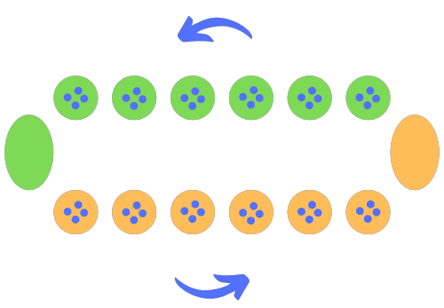
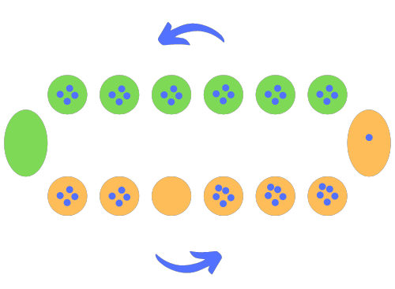
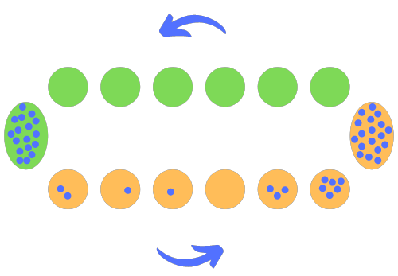
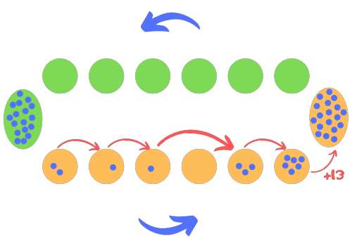

Projet Awale
Moreau Martin
Ronné Kyllian
Présentation de l'Awalé
L'awalé ou awélé est un jeu de société à deux joueurs créé en Afrique.
C'est le plus répandu des jeux de la famille Mancala (jeux de semailles), ensemble de jeux africains de type « compter et capturer » dans lesquels on distribue des cailloux dans des coupelles ou des trous.
Il est disposé de façon à ce que chaque joueur possède 6 cases, contenant 4 cailloux chacune, en face de lui. Le but du jeu est d'être celui qui à la fin de la partie en possède le plus.
Il existe énormément de variantes à ce jeu, nous avons donc simplifié quelques règles afin de nous faciliter la programmation de ce dernier.
Règles du jeu
Commencement:
- La partie commence avec chacune des cases du plateau rempli de quatre cailloux chacune hormis les greniers des joueurs qui sont vides.
- Le premier joueur choisit une case à jouer parmi ses six et distribue ses cailloux dans le sens antihoraire. Si jamais il passe par son grenier il y dépose un caillou mais n'en dépose pas dans celui de son adversaire.
- C'est maintenant au tour du second joueur de jouer une de ses cases et ainsi de suite jusqu'à la fin de la partie.
Quand est-ce qu'une partie se termine?
Une partie est terminée lorsqu'un joueur ne possède plus aucun caillou dans ses cases. On ramasse donc tous les cailloux restants du plateau et on les dépose dans le grenier adverse.
 Comment faire pour gagner des cailloux?
Il y a 2 manières de récupérer des cailloux, la première est de se les distribuer un à un dans son grenier mais cela est long et peu efficace.
La deuxième manière est de terminer sa distribution dans une de ses cases vides, ce qui nous permet de voler les cailloux adverses de la case opposée.